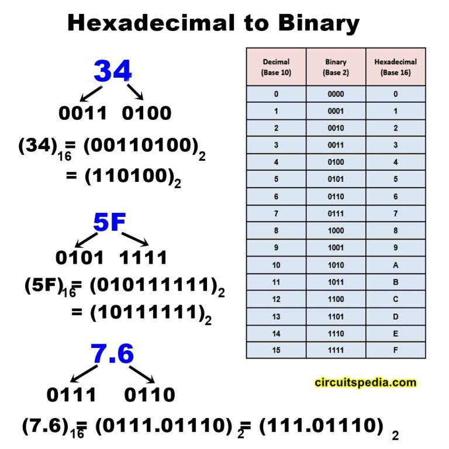

What is number system?

Number System
CSPT
People frequently have to express, symbolize, or link certain things or objects with a quantity in their daily lives. This is because giving numbers to specific qualities or features of life makes it simpler to compare them to other aspects that are comparable. For instance, a teacher grading students' papers wouldn't label each paper with adjectives like "good," "better," "awesome," or "poor," etc. Instead, the teacher would assign that paper a certain numerical value based on the student's performance so that it is simple to assess the student's knowledge and preparation level. If the former approach were to be used, however, it would cause complete confusion and make it impossible to make an accurate comparison.
Due to the teacher eventually running out of appropriate adjectives for this case, all of the students' original responses and answers would be graded using the same phrases. Circumstances like this need the use of a special method of valuation that not only aids in determining the object's true value but also accurately and unambiguously conveys it. The term "number system" refers to a system that uses specific words or symbols to describe an object or value.
Different Number System
- Decimal Number System
- Binary Number System
- Octal Number System
- Hexadecimal Number System
Number system with base value 10 is termed as Decimal number system. It uses 10 digits i.e. 0-9 for the creation of numbers. Here, each digit in the number is at a specific place with place value a product of different powers of 10. Here, the place value is termed from right to left as first place value called units, second to the left as Tens, so on Hundreds, Thousands, etc. Here, units has the place value as 100, tens has the place value as 101, hundreds as 102, thousands as 103, and so on.
Number System with base value 2 is termed as Binary number system. It uses 2 digits i.e. 0 and 1 for the creation of numbers. The numbers formed using these two digits are termed as Binary Numbers. Binary number system is very useful in electronic devices and computer systems because it can be easily performed using just two states ON and OFF i.e. 0 and 1 Decimal Numbers 0-9 are represented in binary as: 0, 1, 10, 11, 100, 101, 110, 111, 1000, and 1001 The Seagate 1TB SATA is a traditional hard disk drive (HDD) with a capacity of 1TB and uses the SATA III interface to connect to the computer. SATA III provides a fast data transfer rate of 6Gbps, but it is slower compared to NVMe-based SSDs. The 1TB capacity provides ample storage for everyday use, but the drive may be slower to access data compared to an NVMe SSD.
Octal Number System is one in which the base value is 8. It uses 8 digits i.e. 0-7 for creation of Octal Numbers. Octal Numbers can be converted to Decimal value by multiplying each digit with the place value and then adding the result. Here the place values are 80, 81, and 82. Octal Numbers are useful for the representation of UTF8 Numbers.
Number System with base value 16 is termed as Hexadecimal Number System. It uses 16 digits for the creation of its numbers. Digits from 0-9 are taken like the digits in the decimal number system but the digits from 10-15 are represented as A-F i.e. 10 is represented as A, 11 as B, 12 as C, 13 as D, 14 as E, and 15 as F. Hexadecimal Numbers are useful for handling memory address locations.

Amazing.
— Jean Hicks

Nice.
— Chris Stanworth